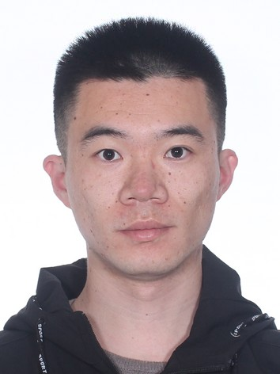

|  | Liwei Kou (寇立伟), Lecturer, Ph.D. |
I'm currently a Lecturer with the College of Electrical and Power Engineering, Taiyuan University of Technology. I got my Ph.D. in Electrical Engineering at Zhejiang University, under the guidance of Prof. Ji Xiang. My research focuses on multi-agent system, robot systems, autonomous underwater vehicles, and surface vehicles.
Ph.D. in Electrical Engineering, Zhejiang University, Sept. 2015 - Jun. 2021
Visiting Student in School of Electrical Engineering and Computing, University of Newcastle, Australia, Nov. 2019 - Apr. 2020
B.S. in Automation, Huazhong University of Science and Technology, Sept. 2011 - Jun. 2015
Shiming He, Liwei Kou, Yanjun Li and Ji Xiang, “Position tracking control of fully-actuated underwater vehicles with constrained attitude and velocities”, IEEE Transactions on Industrial Electronics. 2022, DOI: 10.1109/TIE.2022.3140516.
Liwei Kou, Zhiyong Chen and Ji Xiang, “Cooperative fencing control of multiple vehicles for a moving target with an unknown velocity”, IEEE Transactions on Automatic Control, 2022, 67(2): 1008-1015.
Liwei Kou, Yi Huang, Zhiyong Chen, Shiming He and Ji Xiang, “Cooperative fencing control of multiple second-order vehicles for a moving target with and without velocity measurements”, International Journal of Robust and Nonlinear Control, 2021, 31(10): 4602-4615.
Shiming He, Liwei Kou, Yanjun Li and Ji Xiang, “Robust orientation-sensitive trajectory tracking of underactuated autonomous underwater vehicles”, IEEE Transactions on Industrial Electronics. 2021, 68(9): 8464-8473.
Liwei Kou, Shiming he, Yanjun Li and Ji Xiang, “Constrained control allocation of a quadrotor-like autonomous underwater vehicle”, Journal of Guidance, Control and Dynamics. 2021, 44(3): 659-666.
Liwei Kou, Ji Xiang, Yanjun Li and Jingwei Bian, “Stability and nonlinear controllability analysis of a quadrotor-like autonomous underwater vehicle considering variety of cases”, International Journal of Advanced Robotic Systems, 2018.
Haotian Wu, Shiming He, Zejun Deng, Liwei Kou, Kangwei Huang, Feiyang Suo, Ze Cao, “Fishery monitoring system with AUV based on YOLO and SGBM”, IEEE 28th Chinese Control Conference, 2019.
Liwei Kou, Ji Xiang and Jingwei Bian, “Controllability analysis of a quadrotor-like autonomous underwater vehicle”. IEEE 27th International Symposium on Industrial Electronics (ISIE), 2018.
Liwei Kou, Ji Xiang, Yanjun Li and Jingwei Bian, “Yaw angle tracking control for a quadrotor-like autonomous underwater vehicle using global fast terminal sliding mode control”, IEEE CYBER, 2018.
Wenbo Zhang, Yonggang Peng, Wei Wei and Liwei Kou, “Real-time conflict-free task assignment and path planning of multi-AGV system in intelligent warehousing”, IEEE 27th Chinese Control Conference, 2018.
Liwei Kou, Ji Xiang. “Target fencing control of multiple mobile robots using output feedback linearization”. Acta Aumatic Sinica, 2022, 48(5): 1285-1291.
Liwei Kou, Shiming He, Ji Xiang. “A square root cubature Kalman filter-based positioning algorithm for surface ships”. Shipbuilding of China, 2020, 61(S01), 60-69.
Jingwei Bian, Liwei Kou, Ji Xiang. “Black-box modeling based on PSO and SVM for underwater vehicles”. Journal of Harbin Institute Of Technology, 2019, 51(10): 55-60